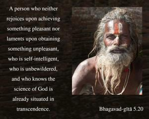

A person who neither rejoices upon achieving something pleasant nor laments upon obtaining something unpleasant, who is self-intelligent, who is unbewildered, and who knows the science of God is already situated in transcendence.

The symptoms of the self-realized person are given herein. The first symptom is that he is not illusioned by the false identification of the body with his true self. He knows perfectly well that he is not this body but is the fragmental portion of the Supreme Personality of Godhead. He is therefore not joyful in achieving something, nor does he lament in losing anything which is related to his body. This steadiness of mind is called sthira-buddhi, or self-intelligence. He is therefore never bewildered by mistaking the gross body for the soul, nor does he accept the body as permanent and disregard the existence of the soul. This knowledge elevates him to the station of knowing the complete science of the Absolute Truth, namely Brahman, Paramātmā and Bhagavān. He thus knows his constitutional position perfectly well, without falsely trying to become one with the Supreme in all respects. This is called Brahman realization, or self-realization. Such steady consciousness is called Kṛṣṇa consciousness.